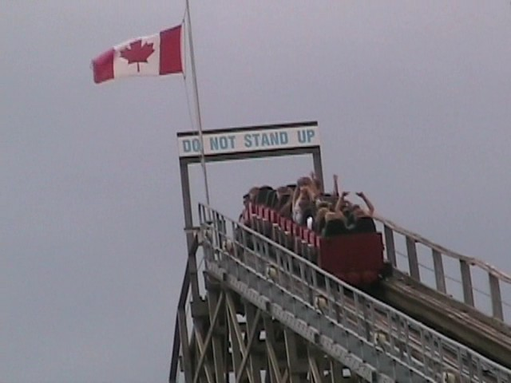
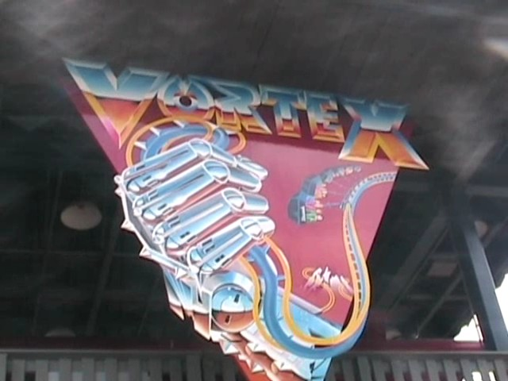
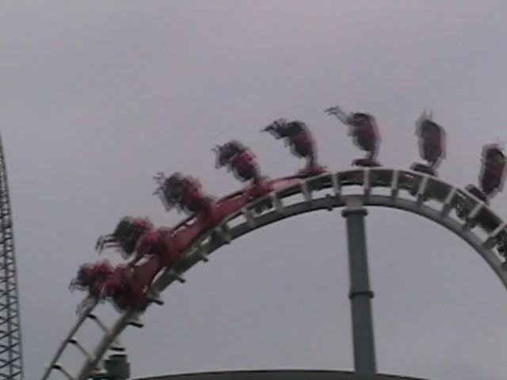
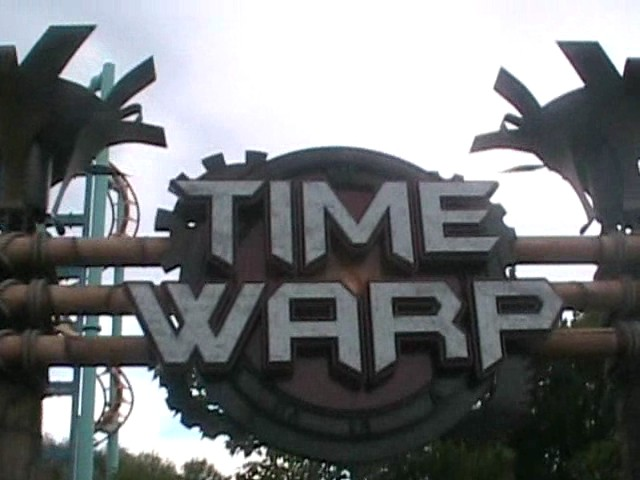
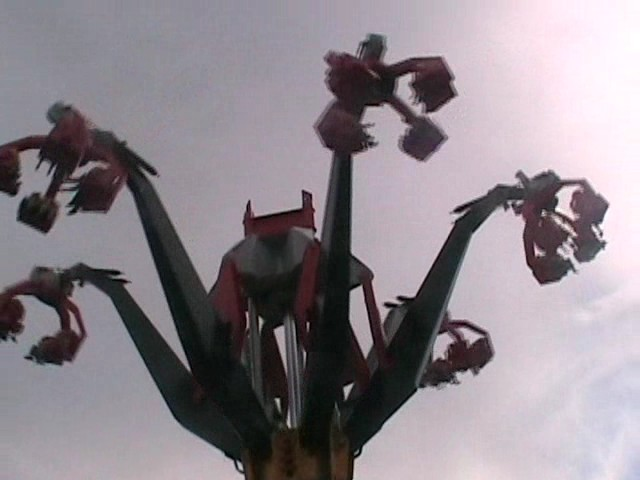
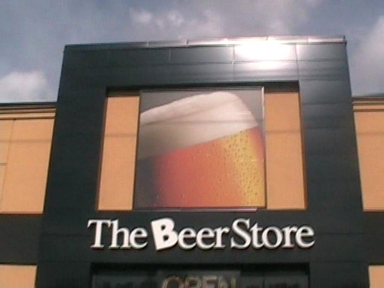
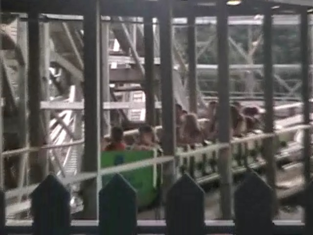
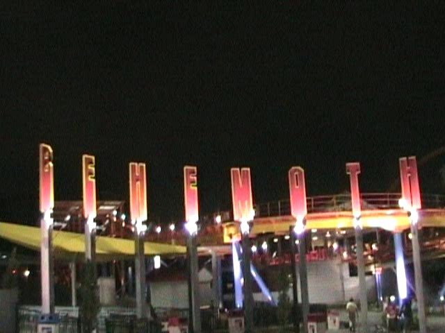

North of the Border Tour
Great Escape La Ronde Canadas Wonderland Michigans Adventure Six Flags Great America Kings Island Kennywood Knoebels Dorney Park
 After our unpleasent experience at La Ronde, we decided to go to a good Canadian Theme Park. And so we did.
After our unpleasent experience at La Ronde, we decided to go to a good Canadian Theme Park. And so we did.
 Umm, which ride do we go on now?
Umm, which ride do we go on now?
 This was one of the most anticipated coasters of the trip. How was it?
This was one of the most anticipated coasters of the trip. How was it?
 The good news is that Behemoth is completely awsome and great!!!
The good news is that Behemoth is completely awsome and great!!!
You see this line? It only took 20 minutes because the operations here are amazing! And the operators are friendly, polite, and smart here unlike on a ride at a certain American Park we'll get to later in the update.
 Up next was the Mighty Canadian Minebuster
Up next was the Mighty Canadian Minebuster

While it wasn't very mighty, it was certinley VERY canadian.
 Next up was the Togo Stand Up.
Next up was the Togo Stand Up.
 Like Cobra @ La Ronde, It was underrated and alot of fun.
Like Cobra @ La Ronde, It was underrated and alot of fun.
You know all that it hurts your balls stuff you hear, it's all bulls**t.

Let's see how this is compared to Ninja.
 HOLY CRAP! THIS THING REDUCED NINJA DOWN TO IRON DRAGGINS LEVEL!!!!
HOLY CRAP! THIS THING REDUCED NINJA DOWN TO IRON DRAGGINS LEVEL!!!!
 Vortex Awsomeness.
Vortex Awsomeness.
While waiting for the Fly, the ride broke down.
Oh well. No big loss.
 My First Top Scan. It was like Hard Rock at the Fair, only without the leg pain. Awsome.
My First Top Scan. It was like Hard Rock at the Fair, only without the leg pain. Awsome.
After #100 Boomerang @ Great Escape and Chocolate Milk Boomerang @ La Ronde, I did NOT need to ride this Boomerang.
Next up was Wild Beast. The new worst coaster ever!
 This thing is slower than Mean Streak, Rougher than sleeping on a broken glass bed, and more disgusting than sex with the Evil Millenium Force Ride Operator.
This thing is slower than Mean Streak, Rougher than sleeping on a broken glass bed, and more disgusting than sex with the Evil Millenium Force Ride Operator.
After my last caption about sex with the Millenium Force Ride Operator, God was so disgusted and angry at the thought that he magically created a storm to close the rides and put me in a time out.
I'm sorry God. I'll be good and never mention that sinful thought ever again.
The Umbrellas! They do nothing!!!
Well, at least we're getting a line out of the way.
 After 20 minutes, God knew I had learned my lesson and reopened the ride. Unfortunetly, he still punished me by making the ride mediocre.
After 20 minutes, God knew I had learned my lesson and reopened the ride. Unfortunetly, he still punished me by making the ride mediocre.
 After the mediocre Dragon Fire, we had to go on something fun.
After the mediocre Dragon Fire, we had to go on something fun.
 And nothing says fun more than Drop Zone.
And nothing says fun more than Drop Zone.
Uh oh. Time for the SLC.
 Unfortunetly, Top Gun is so far, the roughest SLC I've been on. It's really bad.
Unfortunetly, Top Gun is so far, the roughest SLC I've been on. It's really bad.

Hey Cody, I've been on 3 SLCs. How many have you been on?

Time to pop my Volare Cherry.
 After Top Gun, I thought this was going to be as bad as Wild Beast.
After Top Gun, I thought this was going to be as bad as Wild Beast.
 But this ride is alot of fun! I don't see why everyones complaining?
But this ride is alot of fun! I don't see why everyones complaining?

I really hope more parks buy these rides as they're also awsome.
 There's alot of beauty in this park.
There's alot of beauty in this park.
Just a quick reminder.

So this is where Cedar Fair comes up with all the names for their rides! It all makes sense now!!!
You do not want to f**k with that bug.
 If only it was a credit.
If only it was a credit.

The only thing more pathetic than riding the kiddy coaster is arguing with a local 10 year old girl ABOUT the kiddy coaster. *Cough* Spencer. *Cough*
 Oh yeah. They also have a Kiddy SLC. Which unlike Top Gun, is smooth.
Oh yeah. They also have a Kiddy SLC. Which unlike Top Gun, is smooth.
 The suprise of the night would have to be Backlot Stunt Coaster. Holy Crap! I wasn't expecting it to be that good!
The suprise of the night would have to be Backlot Stunt Coaster. Holy Crap! I wasn't expecting it to be that good!
While Backlot Stunt Coaster was the suprise of the night, Behemoth was definetly the star of the night.
Behemoth looking pretty at night.
 3 Behemoth rides in a row is awsome!
3 Behemoth rides in a row is awsome!

The front on Behemoth is SO AWSOME! So worth over $50.00!
Michigans Adventure
Home